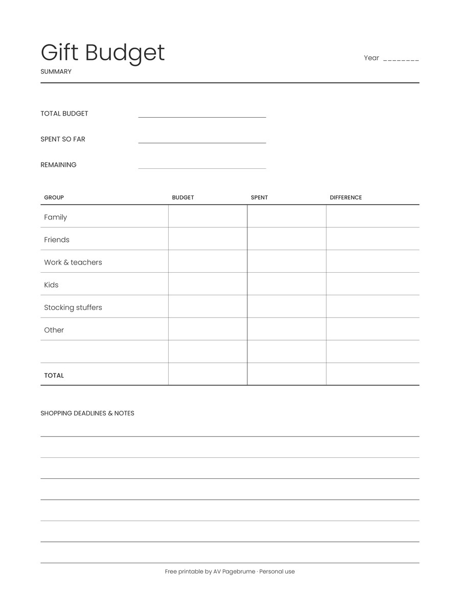
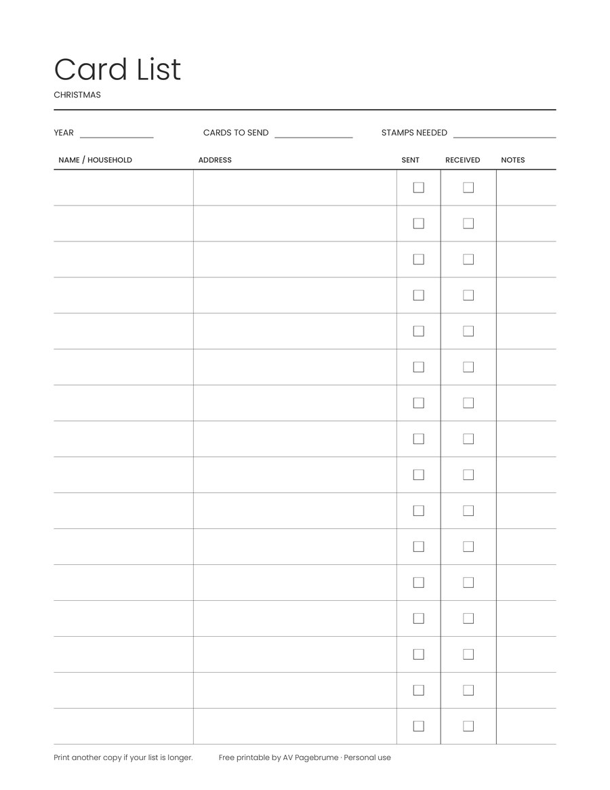

Free printable
Christmas gift tracker
How do I keep track of Christmas gifts and budget?
Write one row for each person: who the gift is for, the gift idea, and the budget. Mark Bought and Wrapped when those are done, then add the budget column at the bottom. The second page is a summary for the total budget, what you have spent, and what is left, with rows for family, friends, work and teachers, kids, stocking stuffers, and other. The printable is undated and sized for US Letter, so fill in the year and print it when you are ready.
Three pages, US Letter, undated: a gift list, a budget summary, and a Christmas card list. Free to download. No sign-up. For personal use.


Also in the PDF: Christmas card list
Page 3 is a simple card list with a row per household: name as it goes on the envelope, mailing address, Sent ☐, Received ☐ and a short Notes column. Fill in Year, Cards to send and Stamps needed at the top, then tick Sent as you mail and Received as cards arrive.
It's undated and uses the same charcoal grid as the gift tracker, so you can reuse it every year. Print another copy if your list is longer.

Questions
Does it include a Christmas card list?
Yes. Page 3 is a card list with name, address, sent, received and notes.
Is there a Word or Google Sheets version?
Not yet. Print the PDF, or copy the columns into your own sheet.